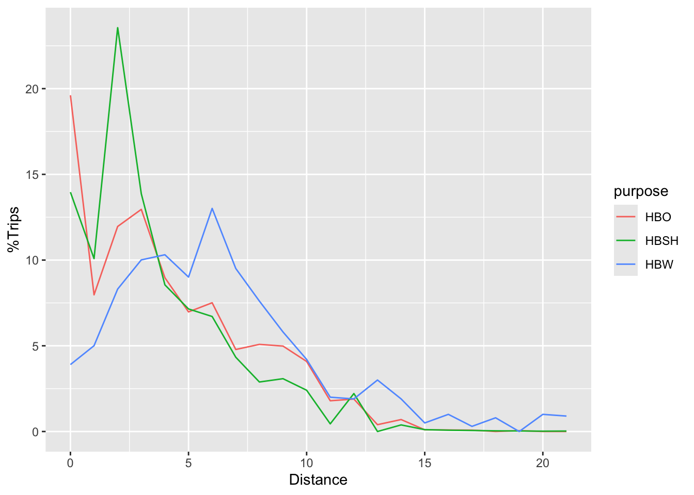

Chapter 4 Mode and Destination Choice
Assume that person has a set of mode choices in front of them. They could pick to drive, walk, take transit, or some combination of those. Which one they pick for which kind of trip is not a simple question, but travel models need a mathematical way to represent this choice.
4.1 Mathematical Derivation
We’ll say that person \(n\) is choosing between alternatives \(i, j, \ldots \in J\). In economic theory, people pick the alternative that brings them the most utility, \(U\). So person \(n\) will choose \(i\) if \(U_i>U_j, \forall j \neq i \in J\). The problem we face is that \(U\) contains things we can measure and model (like the travel time and the fare) as well as things we can’t (like how much this person hates riding the bus). So really \(U_i\) has two parts: a measurable portion \(V_i\) and an unmeasurable portion \(\varepsilon_i\).
\[\begin{equation} U_i = V_i + \varepsilon_i \tag{4.1} \end{equation}\]
So in our model, people will choose \(i\) if
\[\begin{align*} V_i + \varepsilon_i &> V_j + \varepsilon_j, \forall j \neq i \in J\\ V_i - V_j &> \varepsilon_j - \varepsilon_i, \forall j \neq i \in J\\ \end{align*}\]
or, if the difference in observed utility is greater than the difference in the unobserved error. Because this difference in error is unobserved, we can treat it as a random variable with an assumed distribution. If we make a particular assumption5, then the probability that person \(n\) chooses option \(i\) is
\[\begin{equation} P_n(i | V_i, V_j \forall j \neq i \in J) = \frac{e^{V_i}}{\sum_{j\in J} e^{V_j}} \tag{4.2} \end{equation}\]
There are two important things to note that result from this derivation:
- Only the differences in Utility matter. This will have a number of implications for the interpretation and use of the model.
- The model formula depends entirely on the assumed distribution of the unobserved utility. If that assumption isn’t met (and it usually isn’t!) a different model is needed.
4.2 Utility Equations
The observed utility usually takes a linear form, \(V_i = \alpha_i + X_i\beta\). This means that each alternative will have a linear equation,
\[\begin{align*} V_{\text{Auto}} =& - 0.05(\text{time}_a) - 0.3(\text{cost}_a)\\ V_{\text{Bus}} =& -4.5 - 0.05(\text{time}_b) - 0.3(\text{cost}_b) - 1.4(\text{high income})\\ V_{\text{Walk}} =& -6.0 - 0.05(\text{time}_w) - 0.3(\text{cost}_w) - 1.8(\text{high income})\\ \end{align*}\]
Recall that only the difference in the utility matters, which we showed theoretically above. you can also see it numerically because \(e^0 / (e^1 + e^0) = e^1 / (e^2 + e^1) = 0.269\). So the utility equations have to reflect this difference in the way that they get structured. There are three basic basic values that show up in these equations, and the difference between them is how they create and use difference in the utility:
- Alternative-Specific Constants: These function like intercepts in a linear regression model. The constants control for the observed difference between alternatives resulting from the unobserved utility; if all else is equal, the constants describe what the utility of each mode will be. One alternative is selected as the reference alternative, with \(\alpha = 0\).
- Generic Coefficients: These coefficients have a single estimated parameter. That is, the \(\hat{\beta}\) coefficient for these variables has the same value in the utility equation for every alternative. These estimates come from variables that vary naturally across the alternatives, like the cost of travel.
- Alternative-Specific Coefficient: This type of coefficient has a unique estimate for each alternative. That is, \(\hat{\beta}_{DA}\) is different from \(\hat{\beta}_{Walk}\). This type of estimate comes from variables that are constant across alternatives, like the distance of the trip.
4.3 MNL Estimation
Ordinary Least Squares does not work on multinomial logit models, so we need another way of estimating the model coefficients. We instead use a numerical procedure called maximum likelihood estimation.6
The utility equation is \(V_i = \alpha_i + X_i\beta\). We want to find an estimate \(\hat\beta\) that are most likely given the observed data. For one person, the probability that our model picks an alternative \(i\) is given by the MNL formula in Equation (4.2). Let’s simplify this to a function of \(\beta\), \(P_{in}(\beta)\). We want to pick the value of \(\beta\) that gives a high probability to the chosen alternative and low probability to the non-chosen alternatives. Let’s create a power value \(\delta_{in}\) equal to 1 if chosen and zero if not. The likelihood of our model for one alternative is therefore
\[\begin{equation} \mathcal{L} = P_{in}(\beta)^{\delta_{in}} \tag{4.3} \end{equation}\]
But we want to find values that maximize this likelihood for all alternatives for all people. Recall from basic statistics that the probability of multiple independent events occuring simultaneously is the product of the probabilities of each event. So the likelihood equation for our entire dataset is
\[\begin{equation*} \mathcal{L} = \prod_{n=1}^N \prod_{i \in J} P_{in}(\beta)^{\delta_{in}} \end{equation*}\]
We encounter a problem here where each \(P_{in}\) is going to be a number much smaller than 1. If we multiply too many of these numbers together, our computer won’t be able to keep track of a number that small. So we instead use the logarithm of the likelihood function which turns products into sums,
\[\begin{equation} \log(\mathcal{L}) = \sum_{n=1}^N \sum_{i \in J} \delta_{in} \log(P_{in}(\beta)) \tag{4.4} \end{equation}\]
We can also compare the log-likelihood of our estimated model \(\log\mathcal{L}(\beta)\) against the log-likelihood of some reference models to create a statistic that works kind of like \(R^2\) in a linear regression model.
First, imagine that we have a perfect model. That would mean the \(P_{in} = 1\) for the chosen alternative and zero for the others. The log-likelihood of this model is
\[\begin{align*} \log\mathcal{L}(*) &= \sum_{n=1}^N \log(1)\\ &= \sum_{n=1}^N 0\\ \end{align*}\]
Now, what happens if we have a model that is literally no better than random chance? This could be called a null model where each option has equal probability. That would also imply that every utility value is exactly the same,
\[\begin{align*} \log\mathcal{L}(0) &= \sum_{n=1}^N \sum_{i \in J} \delta_{in} \log(\frac{e^0}{\sum_J e^0})\\ &= \sum_{n=1}^N \log(\frac{1}{J})\\ &= N \log(\frac{1}{J})\\ \end{align*}\]
This value depends on the number of observations and alternatives in the data set, and so will be different for each problem. But because the logarithm of a fraction is a negative number, \(\log\mathcal{L}(0)\) will be a large negative number.
The last special likelihood is what would happen if we just used the observed choice probabilities, or the market shares. This is equivalent to a model estimated with only the constants and no other variables included.
\[\begin{align*} \log\mathcal{L}(C) &= \sum_{n=1}^N \sum_{i \in J} \delta_{in} \log(\frac{e^\alpha}{\sum_J e^\alpha})\\ &= \sum_{n=1}^N \sum_{i \in J} \log(P_i)\\ &= N_i \sum_{i \in J} \log(P_i)\\ \end{align*}\]
We can create a measure of goodness-of-fit using these measures. Let’s call it \(\rho^2\). Let’s consider how much more likely our estimated model is than the null model:
\[\begin{equation} \rho_0^2 = 1 - \frac{\log\mathcal{L}(\beta)}{\log\mathcal{L}(0)} \tag{4.5} \end{equation}\]
If our model is no better than random chance, then \(\rho_0^2 = 0\). If our model is perfect (log-likelihood of zero), then \(\rho_0^2 = 1\). In practice, you will not ever see \(\rho_0^2\) values anywhere near 1. You can build an analogous \(\rho_C^2\) metric by using the market shares likelihood as a reference.
4.4 IIA and Nested Logit
The MNL model has a property referred to as the independence of irrelevant alternatives (IIA). This simply means that the ratio of the probabilities of two alternatives is only based on the utility of those two alternatives. Mathematically,
\[\begin{equation} \frac{P_i}{P_k} = \frac{e^{V_i}}{\sum_{j\in J} e^{V_j}} \times \frac{\sum_{j\in J} e^{V_j}}{} = \frac{e^{V_i}}{e^{V_k}} \tag{4.6} \end{equation}\]
This property plays an important role in mode choice, because it introduces some unreasonable behavior when we add a new mode. Consider if we have two modes, car and bus, with utilities of \(V_{bus} = 0\) and \(V_{car} = 1\). The choice probabilities of these two modes are
\[\begin{align*} P_{car} &= \frac{exp(1)}{exp(0) + exp(1)} &= 0.731\\ P_{bus} &= \frac{exp(0)}{exp(0) + exp(1)} &= 0.269\\ \frac{P_{car} }{P_{bus}} &= 0.368 & \end{align*}\]
Now imagine add a light rail alternative to this scenario, with \(V_{LRT} = 0.5\). The choice probabilities are now
\[\begin{align*} P_{car} &= \frac{exp(1) }{exp(0) + exp(1) + exp(0.5)} &= 0.506\\ P_{bus} &= \frac{exp(0) }{exp(0) + exp(1) + exp(0.5)} &= 0.186\\ P_{LRT} &= \frac{exp(0.5)}{exp(0) + exp(1) + exp(0.5)} &= 0.307\\ \frac{P_{car} }{P_{bus}} & = 0.368 & \end{align*}\]
The ratio of the choice probabilities of car and bus stay exactly the same. A consequence of this is that 73% of the new light rail passengers were formerly automobile passengers. But this doesn’t makes intuitive sense; we would expect light rail and bus to have more unobserved things in common. Surely, some automobile riders will decide to take transit when there is a light rail instead of just a bus, but not most of the new light rail riders to be converts. So we need a way to represent the fact that some alternatives are “closer” to other alternatives.
When we derived the MNL, we assumed that the unobserved error \(\varepsilon_i\) was distributed independently. That is, if we were to make a matrix of the correlation of the error between our three alternatives for car, bus, and LRT, it would be the matrix below:
\[\begin{equation*} \varepsilon \sim \begin{matrix} 1 & 0 & 0\\ 0 & 1 & 0\\ 0 & 0 & 1\\ \end{matrix} \end{equation*}\]
But what is more likely is that the two alternatives for bus and LRT have correlated error terms, or the correlation between them is somewhere between 0 and 1. Let’s assume that there is instead some coefficient that dictates the degree to which these error terms are allowed to be correlated.
\[\begin{equation*} \varepsilon \sim \begin{matrix} 1 & 0 & 0\\ 0 & 1 & \lambda_{transit}\\ 0 & 1 - \lambda_{transit} & 1\\ \end{matrix} \end{equation*}\]
This is equivalent to saying that the choice of mode doesn’t look like an equal choice among three alternatives,

But instead a two-stage choice, where people first choose whether they will take transit, and then which transit mode they will choose.

This results in a nested logit model. The choice probability of an alternative in this model is now
\[\begin{equation} P_{i} = \frac{e^{V_i/\lambda_k}(\lambda_{j \in B_{k}} e^{V_j/\lambda_k})^{\lambda_l - 1}} {\sum_{l\in K}(\sum_{j \in B_l} e^{V_j/\lambda_l})^{\lambda_l - 1}} \tag{4.7} \end{equation}\]
It is important to note that if the estimated \(\lambda\) value equals one, then there is no observable correlation between the error terms, and the model reduces to the MNL. If \(\lambda>1\), then it implies negative correlation between the alternatives. This violates utility theory, because it would cause more people to choose auto when the utility of a transit mode increases. So valid values for the estimated correlation are \(0 < \lambda < 1\).
4.5 Accessibility and Log Sums
4.6 Destination Choice
Homework
In this unit’s assignment, you will use data from the 2000 Bay Area Travel
Survey to estimate multinomial and nested logit models that predict mode choice for work
trips. The data is available on on Box. The data
are named as worktrips_dfidx.rds. You will also need to load the
mlogit library package, which contains the tools necessary to estimate
multinomial logit models.
library(mlogit)
worktrips <- read_rds("data/worktrips_dfidx.rds")Because multinomial logit models are so different from other models, the data are stored in a special type of data frame. You can see the first several rows of this data below; Person 1 in household 2 has five alternatives, and they chose to drive alone. Person 3 chose to take transit.
head(worktrips[,1:8], n=12)## HHID PERID CASE ALTNUM NUMALTS CHOSEN IVTT OVTT
## 2-1. Drive Alone 2 1 1 Drive Alone 5 TRUE 13.38 2.0
## 2-1. Share 2 2 1 1 Share 2 5 FALSE 18.38 2.0
## 2-1. Share 3+ 2 1 1 Share 3+ 5 FALSE 20.38 2.0
## 2-1. Transit 2 1 1 Transit 5 FALSE 25.90 15.2
## 2-1. Bike 2 1 1 Bike 5 FALSE 40.50 2.0
## 3-1. Drive Alone 3 1 2 Drive Alone 5 FALSE 29.92 10.0
## 3-1. Share 2 3 1 2 Share 2 5 FALSE 34.92 10.0
## 3-1. Share 3+ 3 1 2 Share 3+ 5 FALSE 21.92 10.0
## 3-1. Transit 3 1 2 Transit 5 TRUE 22.96 14.2
## 3-1. Bike 3 1 2 Bike 5 FALSE 58.95 10.0
## 5-1. Drive Alone 5 1 3 Drive Alone 4 TRUE 8.60 6.0
## 5-1. Share 2 5 1 3 Share 2 4 FALSE 13.60 6.0In the first section, you will estimate a multinomial logit mode choice model for work trips using the data collected in the San Francisco Bay. Then, you will calculate nested logit models on the same data set. In the third step, you will calculate mode choice model log sums and estimate a destination choice model.
First Problem Set: Multinomial Logit Model Estimation
To do this, use the mlogit() function, in a manner sort of like you
would use the lm() command. One thing to look out for: the difference between
generic and alternative-specific variables, described above.
To specify the model, we use the following construction.
fit.mnl <- mlogit ( CHOSEN ~ Generic | Alt.Specific, data = worktrips )To examine the model output, the standard summary() command will produce a
coefficients table and key test statistics. The modelsummary
packages will produce convenient model comparison tables that can be included in
a report or pasted into Excel for further formatting. For your homework, please
include a formatted model comparison table rather than a print out of each model
summary.
Question 1: Calculate the likelihood of a model with no covariates
(equal-shares) and a model with constants only (market shares). Estimate a model
with only the travel time, and calculate the \(\rho^2\) statistics
with respect to the equal shares model and the market shares model. Which
statistic is reported by the summary() command? Why is this important?
Question 2: Estimate a model with just the total travel time
(TVTT) and the cost of the trip (COST). These two parameter estimates will
allow you to calculate the value of time for the sample population as
\[VOT = \frac{60\hat{\beta}_{TVTT}}{100 \hat{\beta}_{COST}}\]
Report the value of time you calculate. Is this reasonable?
Question 3: Estimate a model with the out-of-vehicle travel
time (OVTT), and the in-vehicle travel time (IVTT). What is the
ratio of these parameters? What does this tell you about how people feel waiting
for the bus?
Question 4: Estimate a model with the residential population density
(RSPOPDEN) and the workplace employment density (WKEMPDEN), controlling for
the affordability of the trip (COSTINC). Does land use at the production or the
attraction end of the trip affect the mode choice problem more? Is it different
by mode?
Second Problem Set: Nested Logit Models
In this set of problems, you will estimate nested logit models. To specify
nests in an mlogit estimation, you supply a list of alternatives to the nests
argument. The code below puts all auto-based alternatives in one nest called
auto and the other alternatives into another nest called nonauto.
nl <- mlogit(CHOSEN ~ COST + TVTT + OVTT | WKEMPDEN, data = worktrips,
nests = list(auto = c('Drive Alone', 'Share 2', 'Share 3+'),
nonauto = c('Bike', 'Walk', 'Transit'))Question 5: Estimate a nested logit model including cost, travel time,
out-of-vehicle travel time, and workplace employment density. Group car
alternatives into one nest, and non-car alternatives into another. Constrain the
nesting parameter to a single value (set the parameter un.nest.el = TRUE).
What is the estimated value of the nesting parameter? What are the implications
of this parameter value for across-nest substitution?
Question 6: Estimate another nested logit model with the same nests, but this
time segment the data on income; include households making less than $50k/year
in one segment and households making at least $50k in the other. Add vehicles
per worker as a covariate (VEHBYWRK). Comment on how the two segments respond
to the different covariates. Which matters more to which group?
Question 7. Of all the models you estimated (including in the previous segment), which is the preferred in terms of model likelihood? What about in terms of behavioral sensitivity / reasonableness?
Third Problem Set: Log Sums and Destination Choice
| Mode Choice | |
|---|---|
| (Intercept) × Share 2 | -2.405 |
| (0.063) | |
| (Intercept) × Share 3++ | -3.863 |
| (0.107) | |
| (Intercept) × Transit | -1.535 |
| (0.134) | |
| (Intercept) × Bike | -3.595 |
| (0.187) | |
| (Intercept) × Walk | -2.598 |
| (0.105) | |
| IVTT | -0.006 |
| (0.006) | |
| OVTT | -0.052 |
| (0.006) | |
| COST | -0.003 |
| (0.000) | |
| WKEMPDEN × Share 2 | 0.001 |
| (0.000) | |
| WKEMPDEN × Share 3++ | 0.002 |
| (0.000) | |
| WKEMPDEN × Transit | 0.003 |
| (0.000) | |
| WKEMPDEN × Bike | 0.001 |
| (0.001) | |
| WKEMPDEN × Walk | 0.002 |
| (0.001) | |
| Num.Obs. | 5029 |
| AIC | 7329.0 |
| BIC | |
| Log.Lik. | -3651.489 |
| rho2 | 0.248 |
| rho20 | 0.595 |
Question 8. An MNL mode choice model is given above. Calculate the utility, choice probabilities, and the choice model logsum for the individual in the dataset below.
| IVTT | OVTT | COST | WKEMPDEN | alternative |
|---|---|---|---|---|
| 13.4 | 2 | 70.6 | 3.48 | Drive Alone |
| 18.4 | 2 | 35.3 | 3.48 | Share 2 |
| 20.4 | 2 | 20.2 | 3.48 | Share 3+ |
| 25.9 | 15.2 | 116. | 3.48 | Transit |
| 40.5 | 2 | 0 | 3.48 | Bike |
Question 9 The same person is choosing which of two destinations to travel to. The travel times to Zone 1 are given in question 8, and the travel times to Zone 2 are given below. The destination choice utility equation is \(V_j = 0.35 * \text{MCLS}_{ij} + 2.56 * \ln(\text{office}_j) + 1.45 * ln(\text{service}_j)\).
| IVTT | OVTT | COST | WKEMPDEN | alternative |
|---|---|---|---|---|
| 29.92 | 10.0 | 390.81 | 764.19 | Drive Alone |
| 34.92 | 10.0 | 195.40 | 764.19 | Share 2 |
| 21.92 | 10.0 | 97.97 | 764.19 | Share 3+ |
| 22.96 | 14.2 | 185.00 | 764.19 | Transit |
| 58.95 | 10.0 | 0.00 | 764.19 | Bike |
The socioeconomic data for both zones is given below. Calculate the destination utilities, choice probabilities, and the destination choice logsum.
| TAZ | office | service |
|---|---|---|
| 1 | 126 | 742 |
| 2 | 321 | 140 |
Question 10. An improvement to the transit system is proposed that will lower the above individual’s transit out-of-vehicle time to zone 1 to 5 minutes (from 15.2). Calculate the mode choice utility, probabilities, and the mode choice model logsum. What is the monetary value of this transit improvement to the mode choice of this person?
Question 11. Using the same improvement, calculate the destination choice utility, probabilities, and destination choice logsum. What is the monetary value of the transit improvement to the destination choice? Does this include the mode choice benefit?
Lab
In practice, small-sample surveys have a difficult time generating estimates of choice parameters that are both precise and rational. As a result, it is common to assert choice coefficients that have worked well in comparable cities and then calibrate the mode-specific constants and distance decay parameters to match your targets. In this lab you will calibrate the mode choice models and the destination choice models for the following trip purposes:
- Home-based Work
- Home-based Other
- Home-based Shopping
In the Roanoke mode choice model, HBO and HBShopping get combined for mode choice. So you will calibrate three purposes in the destination choice model, but only two in the mode choice model.
Even though trip distribution comes first in the standard four-step process, we end up using the mode choice logsums mode choice to inform destination choice. Mathematically they happen simultaneously, but in the model it goes
skims > mode choice logsums > destination choice > mode choiceAs a result you will need to calibrate the models iteratively: first adjust the mode choice constants, then the distance decay parameters, then mode choice, etc., until you are satisfied that the model meets the targets.
Mode Choice Calibration
The coefficients are found in the ./Params/mc/MC_Coefficients.csv file. Record
the coefficients in a table in your lab report accompanying a description of the
purpose of each coefficient and any notable values. These coefficients are
fixed; they should not change as part of this exercise.
read_csv("data/rvtpo_data/MC_Coefficients.csv") %>%
kbl() %>%
kable_styling()## Rows: 20 Columns: 6## ── Column specification ────────────────────────────────────────────────────────
## Delimiter: ","
## chr (1): Name
## dbl (5): ;N, HBW, HBO, NHB, HBSC##
## ℹ Use `spec()` to retrieve the full column specification for this data.
## ℹ Specify the column types or set `show_col_types = FALSE` to quiet this message.| ;N | Name | HBW | HBO | NHB | HBSC |
|---|---|---|---|---|---|
| 1 | CIVTT | -0.02500 | -0.01500 | -0.02000 | -0.01500 |
| 2 | CSWAIT | -0.05625 | -0.03375 | -0.04500 | -0.03375 |
| 3 | CLWAIT | -0.02500 | -0.01500 | -0.02000 | -0.01500 |
| 4 | CXWAIT | -0.06250 | -0.03750 | -0.05000 | -0.03750 |
| 5 | CCOST | -0.00158 | -0.00237 | -0.00253 | -0.18000 |
| 6 | CDRIVE | -0.05625 | -0.03375 | -0.04500 | -0.03375 |
| 7 | CTERML | -0.06250 | -0.03750 | -0.05000 | -0.06250 |
| 8 | CWALK | -0.06250 | -0.03750 | -0.05000 | -0.03750 |
| 9 | CWALK1 | -0.06250 | -0.03750 | -0.05000 | -0.03750 |
| 10 | CWALK2 | -0.09375 | -0.05625 | -0.07500 | -0.05625 |
| 11 | CBIKE1 | -0.06250 | -0.03750 | -0.05000 | -0.03750 |
| 12 | CBIKE2 | -0.09375 | -0.05625 | -0.07500 | -0.05625 |
| 13 | DWalkBIKE | 1.00000 | 1.00000 | 1.00000 | 1.00000 |
| 14 | NC1 | 0.50000 | 0.50000 | 0.50000 | 0.50000 |
| 15 | NC2 | 0.50000 | 0.50000 | 0.50000 | 0.50000 |
| 16 | NC3 | 0.50000 | 0.50000 | 0.50000 | 0.50000 |
| 17 | CBD | 0.00000 | 0.00000 | 0.00000 | 0.00000 |
| 18 | NXFER | 0.00000 | 0.00000 | 0.00000 | 0.00000 |
| 19 | AUTOCOST | 13.60000 | 13.60000 | 13.60000 | 13.60000 |
| 20 | SHAREFAC | 2.00000 | 2.00000 | 2.00000 | 2.00000 |
The mode-specific constants are in a separate file, ./Params/mc/MC_Constants.csv.
The reference alternative in the choice model is Drive Alone, and the alternatives
with their nesting structure are:
Trips
|-- Auto
| |--Drive
| |--Share
|
|-- Transit
| |--Local
| |--Premium
|
|-- Non-motorizedread_csv("data/rvtpo_data/MC_Constants.csv") %>%
kbl() %>%
kable_styling()## Rows: 10 Columns: 6## ── Column specification ────────────────────────────────────────────────────────
## Delimiter: ","
## chr (1): Name
## dbl (5): ;N, HBW, HBO, NHB, HBSC##
## ℹ Use `spec()` to retrieve the full column specification for this data.
## ℹ Specify the column types or set `show_col_types = FALSE` to quiet this message.| ;N | Name | HBW | HBO | NHB | HBSC |
|---|---|---|---|---|---|
| 1 | K_SR | 1 | 1 | -0.0336 | -1.1685 |
| 2 | K_TRN | 1 | 1 | -2.2714 | 0.3261 |
| 3 | K_NMOT | 1 | 1 | -0.8655 | -1.2505 |
| 4 | K_PREM | 0 | 0 | 0.0000 | 0.0000 |
| 5 | NA | 0 | 0 | 0.0000 | 0.0000 |
| 6 | NA | 0 | 0 | 0.0000 | 0.0000 |
| 7 | NA | 0 | 0 | 0.0000 | 0.0000 |
| 8 | NA | 0 | 0 | 0.0000 | 0.0000 |
| 9 | NA | 0 | 0 | 0.0000 | 0.0000 |
| 10 | NA | 0 | 0 | 0.0000 | 0.0000 |
There is currently no premium service in the model, so changing its constant will not result in more people taking it. But the structure for it exists, if the MPO wants to look at some future transit options.
For initial values for the alternative-specific constants, you can use parameters you estimated in the homework. After you run the destination choice model and adjust its calibration (see below), run the mode choice model and look at the mode choice report. Calculate new alternative specific constants using the bias adjustment formula,
\[\alpha_{n+1} = \alpha_n + \log(A_j / S_j) \]
Where \(A_j\) is the population share (target) and \(S_j\) is the model share. The population shares (targets) are given below.
# Population shares (targets)
read_xlsx("data/rvtpo_data/mc.xlsx") %>%
knitr::kable(digits = 1)| Mode | HBW | HBO |
|---|---|---|
| Drive Alone | 87.5 | 44.1 |
| Share | 8.4 | 45.5 |
| Local Bus | 2.7 | 0.5 |
| Premium | 0.0 | 0.0 |
| Non-motorized | 1.4 | 9.9 |
Destination Choice Calibration
A destination choice model has three basic components:
- A size term: these are the trip attraction rates
- An impedance term: this is the mode choice logsum
- Calibration constants
Return to your trip generation lab where you estimated and adjusted attraction rates for different land uses. These attraction rates are the size terms of the destination choice model; replace the dummy rates in the model with your estimated rates.
The coefficient on the logsum term should match the nesting parameter in the mode choice model. This link is what allows for a simultaneous mode and destination choice.
Instead of alternative-specific constants, a destination choice model includes calibration constants based on distance-decay functions. By adjusting these parameters, we can make the modeled trip length frequency distribution match the observed distribution. The roanoke model has three basic versions that can be combined (but really don’t need to be)
- A distance polynomial (\(\beta_d d + \beta_{d2} d^2 + \beta_{d3} d^3\))
- A logarithmic decay function (\(\beta_d \log(d)\))
- A set of bins for trips within specific mile ranges, 0-1, 1-2, etc.
There is also an intrazonal constant, which we can leave alone for this lab. Remember that most of the work should be done by the logsum and the size term, and that the constants shouldn’t generally violate basic travel behavior theory. These constants are really just here to nudge the distribution in one direction or another.
The table and figure below show the observed trip length frequency distributions for the purposes you need to calibrate. An Excel file with the values is on LearningSuite.
tlfd <- read_xlsx("data/rvtpo_data/tlfd.xlsx")
knitr::kable(tlfd)| HIGH | MID | LOW | HBW | HBO | HBSH |
|---|---|---|---|---|---|
| 1 | 0.5 | 0 | 3.9039039 | 19.6131359 | 13.9606519 |
| 2 | 1.5 | 1 | 5.0050050 | 7.9734108 | 10.0849391 |
| 3 | 2.5 | 2 | 8.3083083 | 11.9601161 | 23.5531056 |
| 4 | 3.5 | 3 | 10.0100100 | 12.9567925 | 13.8690052 |
| 5 | 4.5 | 4 | 10.3103103 | 8.9700871 | 8.5542211 |
| 6 | 5.5 | 5 | 9.0090090 | 6.9767344 | 7.1484507 |
| 7 | 6.5 | 6 | 13.0130130 | 7.5098897 | 6.7094465 |
| 8 | 7.5 | 7 | 9.5095095 | 4.7840465 | 4.3326161 |
| 9 | 8.5 | 8 | 7.6076076 | 5.0830494 | 2.8884107 |
| 10 | 9.5 | 9 | 5.8058058 | 4.9833817 | 3.0809714 |
| 11 | 10.5 | 10 | 4.2042042 | 4.0863730 | 2.4070089 |
| 12 | 11.5 | 11 | 2.0020020 | 1.7940174 | 0.4464608 |
| 13 | 12.5 | 12 | 1.9019019 | 1.8936851 | 2.2144482 |
| 14 | 13.5 | 13 | 3.0030030 | 0.3986705 | 0.0000000 |
| 15 | 14.5 | 14 | 1.9019019 | 0.6976734 | 0.3851214 |
| 16 | 15.5 | 15 | 0.5005005 | 0.0996676 | 0.1093873 |
| 17 | 16.5 | 16 | 1.0010010 | 0.0897009 | 0.0772576 |
| 18 | 17.5 | 17 | 0.3003003 | 0.0797341 | 0.0590860 |
| 19 | 18.5 | 18 | 0.8008008 | 0.0000000 | 0.0402657 |
| 20 | 19.5 | 19 | 0.0000000 | 0.0498338 | 0.0304333 |
| 21 | 20.5 | 20 | 1.0010010 | 0.0000000 | 0.0210982 |
| 22 | 21.5 | 21 | 0.9009009 | 0.0000000 | 0.0276142 |
ggplot(tlfd %>% gather(purpose, share, HBW:HBSH),
aes(x = LOW, y = share, color = purpose)) +
geom_line() +
xlab("Distance") + ylab("%Trips")
The modeled TLFD for each purpose can be had on the model home screen as an output of the trip distribution model. Calculate the error between your observed and modeled TLFD. Determine which calibration curve you will use (you may decide to use different curves for different purposes). Find the coefficients of the curve that will compensate for the error in the model.
Re-run the destination choice model with your new coefficients, run the mode choice model, and adjust the coefficients over there.
Report
Your lab report should describe the trip distribution and mode choice models; include discussions of the coefficients and your process to calibrate the mode and distance constants. Provide results of the calibration including observed and modeled mode choice and trip length frequency distributions.